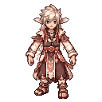
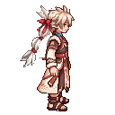
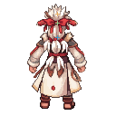
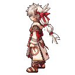
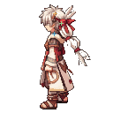
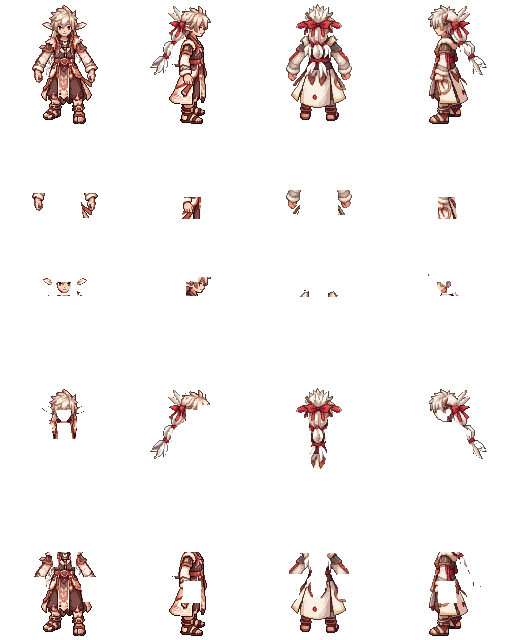

FRONT: source approved

RIGHT90: hair-only draft


BACK: owned reference

LEFT: owned reference


Only FRONT source is approved. RIGHT90 costume is unresolved. BACK/LEFT are existing owned references, not new corrected or approved art. No clean hidden anatomy or new-base animation is delivered.





Columns: FRONT / RIGHT90 / BACK / LEFT. Rows: source / body residual (includes wraps) / visible head / visible hair / visible garment. Empty pixels are missing anatomy, not a clean body.

Anchor marks: white foot; blue neck; green hair root; gold headgear seat. All attachment seats are provisional.